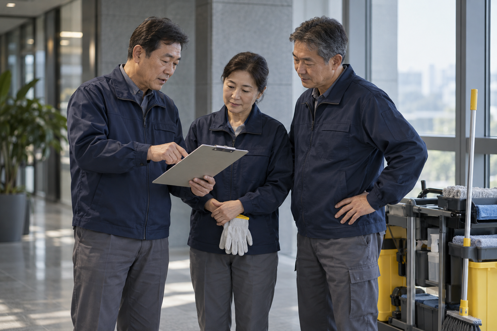
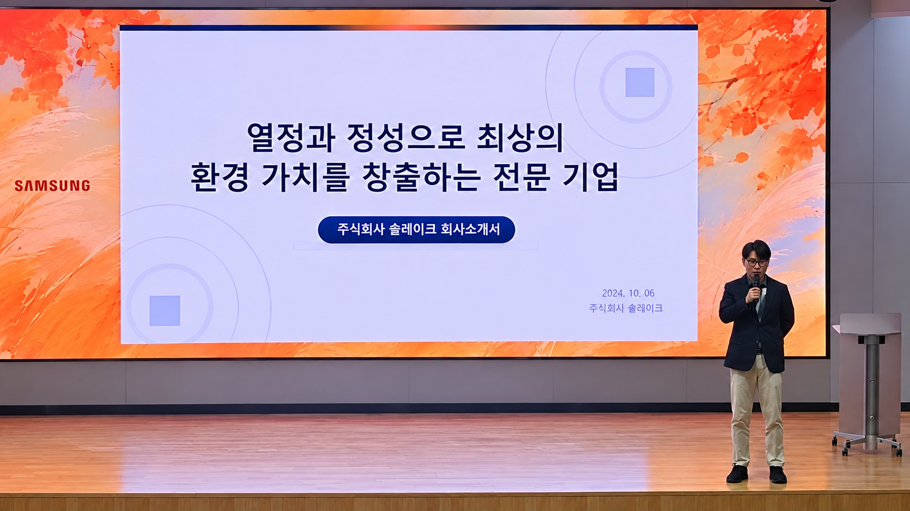

경험과 열정을 갖춘 인력
현장을 이해하는 숙련자의 판단과 책임감을 바탕으로 작업합니다. 재취업을 통해 축적된 경험이 계속 쓰일 수 있도록 합니다.
회사 소개
솔리버는 반도체 라인미화 경험을 갖춘 숙련 인력을 주축으로 설립했습니다. 현장에서 익힌 작업 절차와 안전관리 노하우를 일반미화에 접목해, 고객이 업무에 집중할 수 있는 환경을 관리합니다.
일반미화와 비품관리에 집중하며, 숙련자의 전문성과 합리적인 가격 경쟁력을 함께 제공합니다.
창업 이야기
솔리버는 솔레이크에서 퇴직한 숙련 인력이 주축이 되어 설립한 회사입니다. 일반미화와 비품관리에 전문적으로 집중하며, 현장 경험을 바탕으로 높은 관리 품질과 합리적인 가격 경쟁력을 함께 제공합니다. 반도체 라인미화에서 익힌 작업 절차와 안전관리 노하우를 고객의 일상 공간에 적용합니다.

현장을 이해하는 숙련자의 판단과 책임감을 바탕으로 작업합니다. 재취업을 통해 축적된 경험이 계속 쓰일 수 있도록 합니다.
작업 순서를 정하고, 위험을 공유하며, 결과를 확인하는 습관을 일반미화의 현장 조건에 맞춰 적용합니다.
필요한 작업 범위와 투입 인력·시간을 설계하고, 점검과 조정을 통해 관리 품질과 비용의 균형을 추구합니다.
반도체 라인 미화 전문성
삼성전자 협력사로 기흥 K1·K2 생산 라인 11곳과 ISO 14644 Class 1 등급 라인에서 미화를 수행해 왔습니다.
대표이사는 삼성전자 DS 반도체 임원 출신입니다.
관리 원칙
눈에 잘 띄지 않는 부분까지 확인하고 작업을 마무리합니다.
현장에 알맞은 작업 기준을 세우고, 작업 방법이 달라도 결과에 대한 만족 기준은 같습니다.
고객사의 절차와 규정 안에서, 합의한 범위만 작업합니다.
작업 전에 위험을 먼저 확인하고 안전을 확보한 뒤 작업합니다.
회사명의 의미
고객에게 에너지를 전합니다. 현장의 요구를 먼저 이해하고 필요한 일을 능동적으로 찾아 실행하는 자세입니다.
흐르는 강물처럼 꾸준한 관리로 신뢰를 쌓습니다. 현장의 변화를 살피고, 경험을 이어가며, 더 나은 작업 방법을 찾아갑니다.
태양의 열정으로 고객에게 에너지를 전하고,
강물처럼 꾸준한 관리로 변함없는 신뢰를 쌓습니다.

대표이사 인사말
안녕하십니까.
주식회사 솔리버 대표이사 조현덕입니다.
반도체 현장의 경험을 이어, 일상의 청결과 안전을 높이겠습니다.
솔리버는 반도체 라인미화 현장에서 쌓은 노하우를 일반미화에 접목하고자 창업했습니다. 퇴직 후에도 능력과 열정을 펼치고자 하는 숙련 인력과 함께, 경험이 새로운 현장의 가치로 이어지도록 하겠습니다.
작업 절차를 지키고 위험을 미리 살피며, 작은 이상도 놓치지 않는 관리로 고객의 신뢰에 답하겠습니다. 현장에 필요한 범위를 정확하게 설계하고 운영을 개선해, 전문성과 합리적인 비용을 함께 제공하겠습니다.
감사합니다.
대표이사 약력전 삼성전자 DS 반도체 임원